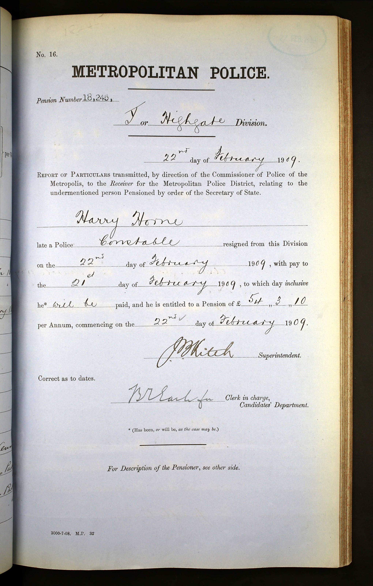
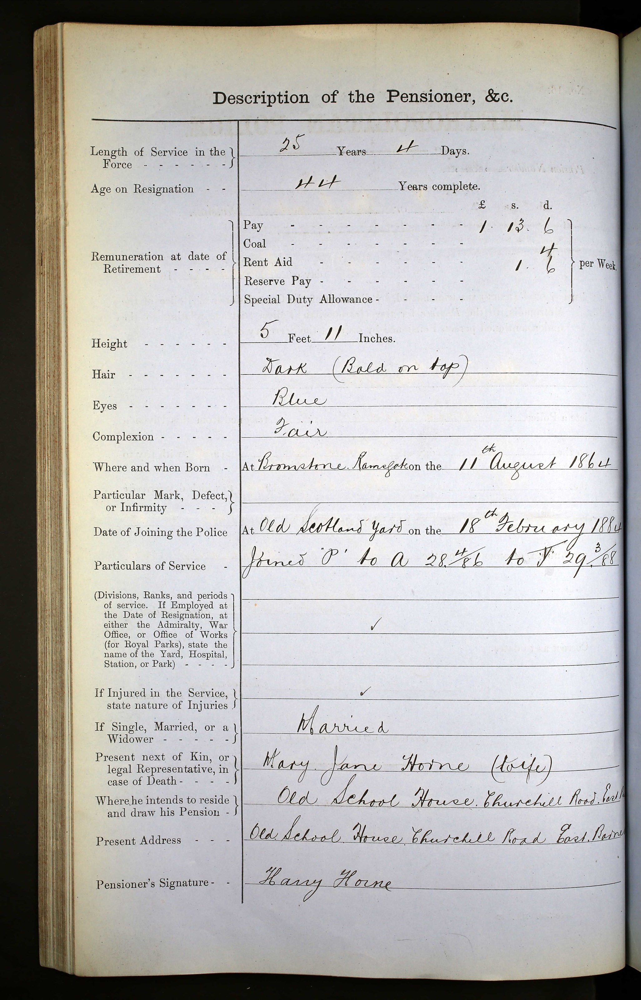
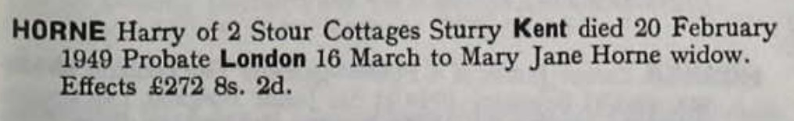
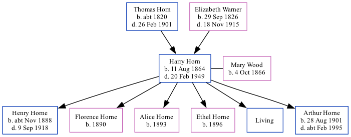

Harry Horn 1864 - 1949
[ Home ] | [ Calendar ] | [ Surnames Index ] | [ Family History ]A constable metropolitan police officer and the son of Thomas Horn (a farm bailiff) and Elizabeth Warner (a general shopkeeper), Harry Horn, the great-great-uncle of Nigel Horne, was born in St Peter's, Kent, England on Aug 11, 18641, was baptized in St Peters, Thanet, Kent, England on Dec 11, 1864 andhad 6 children with Mary Jane Wood: Henry Lewis, Florence A, Alice M, Ethel M, Albert Victor and Arthur, along with 1 surviving child.
Throughout his life, Harry lived in several places: at Northdown, Margate, Kent, England on Apr 2, 18715; at Bush Hill, Edmonton, London, England on Apr 5, 18916; on Jackson Road, East Barnet (Herts), Hertfordshire, England in 19011; on 3 Jackson Road, Barnet, London on Mar 31, 19011; at 15 Liverpool Lawn, Ramsgate, Kent on Apr 2, 19117 and in 19133; at 19 Palace Street, Canterbury, Kent in 19184; and at 2 Stour Cottages, Sturry, Kent on Sep 29, 19398 and in 1949.
He died on Feb 20, 1949 in Bridge, Kent2.
Parents
- Thomas was born c. 1820
- Elizabeth Ann was born on Sep 29, 1826
Children
- Henry Lewis was born c. Nov 1888
- Florence A was born in 1890
- Alice M was born in 1893
- Ethel M was born in 1896
- Arthur was born on Aug 28, 1901
Citations
- 1901 England, Wales & Scotland Census - Findmypast (was age 36 and the head of the household)
- England & Wales deaths 1837-2007 - Findmypast
- 1913 Kelly's Kent Directory
- From son (Henry Lewis Horne) death notice in CWGC
- 1871 England, Wales & Scotland Census - Findmypast (was age 10 and the son of the head of the household)
- 1891 England, Wales & Scotland Census - Findmypast (was age 26 and the head of the household)
- 1911 Census for England & Wales - Findmypast (was age 46 and the head of the household)
- 1939 Register - Findmypast (was the head of the household)
Media
Harry Horne Police Pension - 1

Harry Horne Police Pension - 2

Harry Horne - Probate

1913 Kelly's Kent Directory
Kent, Canterbury Archdeaconry baptisms 1538-1912 - GBPRS/CANT/B/96349871
England & Wales deaths 1837-2007 - BMD/D/1949/1/AZ/000566/094
England Births & Baptisms 1538-1975 - R_884664330
England & Wales Births 1837-2006 - BMD/B/1864/3/AZ/000599/101
1939 Register - TNA/R39/1801/1801D/003/08
1891 England, Wales & Scotland Census - GBC/1891/0008217301
1901 England, Wales & Scotland Census - GBC/1901/0008358011
1911 Census For England & Wales - GBC/1911/RG14/04516/0291/1
Family Tree
Generated by Ged2Site. Last updated on Jul 20, 2025